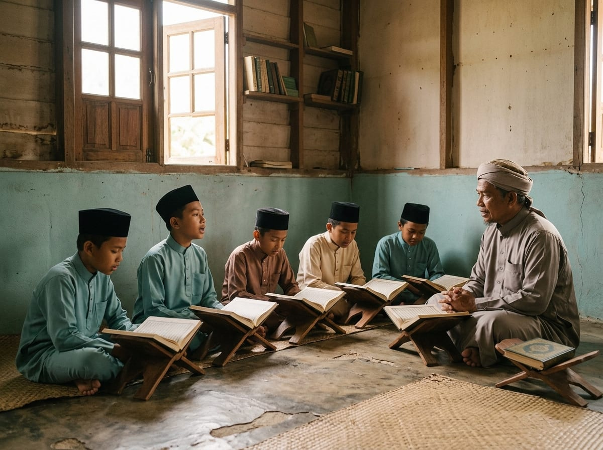

Bab Pertama
Hafazan & Tahfiz
Setiap waktu solat membawa anak-anak kembali kepada Al-Quran, dalam kitaran tasmi' dan ziyadah yang konsisten sepanjang tahun — bukan sekali seminggu, tetapi setiap hari.
- SubuhTasmi' — semakan hafazan lama
- PagiZiyadah — hafazan ayat baharu
- Tengah hariKelas akademik bermula
- PetangMurajaah berkumpulan
- MalamTasmi' akhir & muhasabah